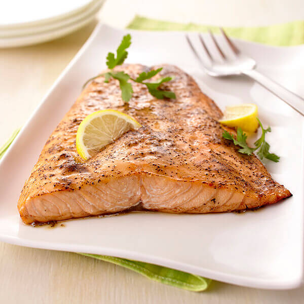

Lemon Pepper Samon

Description
The perfect recipe to make salmon at home.
Bringing the flavors of lemon and pepper to this tasty sea creature.
Ingredients
- 1 pound salmon fillet, skin removed
- 1 tablespoon freshly grated lemon zest
- 1/4 teaspoon salt
- 1/4 teaspoon cracked black pepper
- 1 tablespoon butter with olive oil and sea salt
- 1 tablespoon fresh lemon juice
Directions
-
Heat oven to 400 degrees Fahrenheit.
Line a rimmed baking pan with aluminum foil.
-
Place salmon into prepared pan.
Sprinkle with lemon zest, salt and pepper.
Divide butter with olive oil and sea salt evenly among
tops of salmon fillets.
Pour lemon juice over top.
-
Bake, uncovered, 12-15 minutes or until salmon flakes easily with fork.
Serve with lemon wedges and fresh parsley sprigs, if desired.